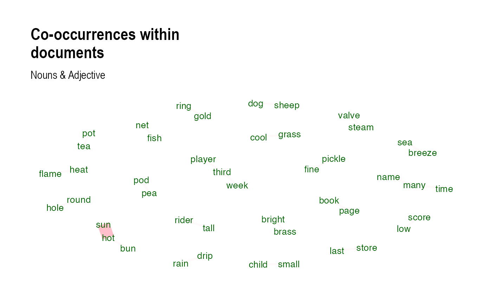
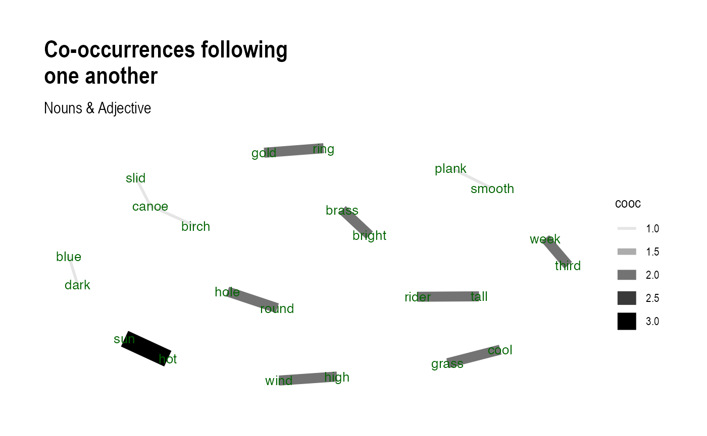

vignettes/parts_of_speech_workflow.Rmd
parts_of_speech_workflow.RmdIn this vignette we’ll be looking at how to use LimpiaR to process a text variable for its parts of speech via {udpipe}. For a primer on parts of speech see Parts of Speech Wikipedia
The main motivation for processing and extraction parts of speech is to home in on the particular aspects of language which are most informative for answering a given research question. For example, if you want to know what people think about something, you might focus on adjectives and nouns. If you want to know how people are using something, you might focus more on verbs/phrasal verbs.
Before we start, we must ensure that we have the necessary libraries installed and loaded, including LimpiaR, and a few others for data wrangling purposes.
LimpiaR’s Parts of Speech(POS) workflow leans on existing functionality of {udpipe} and allow for users to import one of their existing trained models for parts of speech analysis, to later annotate texts by tokenizing(breaking sentences up into words) and also enabling users to perform dependency parsing on tokens, ‘a technique which provides to each word in a sentence the link to another word in the sentence, which is called its syntactical head. This link between each 2 words furthermore has a certain type of relationship giving you further details about it’, see here for more.
First, we must select what model it is that that we want to download.
UDPipe pre-trained models are built upon Universal Dependencies
treebanks and are made available for more than 65 languages based on 101
treebanks. For the purpose of this documentation, we will select the
‘english’ model, and we can do so using the
limpiar_pos_import_model() function and supplying its only
argument, language with the desired model.
model <- limpiar_pos_import_model(language = "english")Now we have our model imported into our session, lets load some data for us to annotate. Using the data object derived from the {stringr} package and containing sentences ideal for tagging, tokenizing, lemmatizing and parsing for parts of speech analysis, for this example we will mutate columns; document and universal_message_id. These two columns will serve as likely variables within the users data-set in a real-world situation or project.
data <- dplyr::tibble(text = tolower(stringr::sentences[1:1000]), document = 1:1000) %>%
dplyr::mutate(universal_message_id = paste0("TWITTER", sample(1:1000, 1000, replace = FALSE)))Now we have our data and we should have our loaded model, we can
begin annotating with the limpiar_pos_annotate()
function.
It’s worth noting that the output can entirely depend on any cleaning steps performed on texts before annotating. For example, it is possible that with the removal of punctuation, the dependency parsing bits of the function may under-perform. This could also be said for the Parts of Speech(POS) tagging process as nouns(PRON) and proper-nouns(PROPN) will be harder to differentiate if punctuation is removed as well as all text being lowercase.
When using LimpiaR’s annotate function we first tokenize all
sentences of our text variable(text_var) within a selected data frame
object(data), enabling us to perform POS tagging and lemmatization on
tokens. We can also speed this process up by calling TRUE
on the parallel processing argument(in_parallel). The user can also
decide whether to parse tokens for term dependencies, by supplying the
parse_text argument with a logical input of TRUE, but is
FALSE by default as this step can be expensive on compute
and memory if performed on large sets of data unnecessarily or
unwillingly. When using limpiar_pos_annotate() its
important to supply the id_var with an appropriate identifying variable.
This can either be; universal_message_id, doc_id, doc_number or anything
similar that represents a unique document of text which the annotations
are then performed upon.
annotations <- limpiar_pos_annotate(data = data, text_var = text, id_var = universal_message_id, pos_model = model,parse_text = TRUE)## Performing dependency parsing on tokens...## Parts of speech tagging in process...Now that we have our texts tokenized, parsed and POS annotations are complete. Lets take a look at the output in a data table.
annotations %>%
dplyr::slice_head(n = 50) %>%
DT::datatable() Our first observation might be that the data frame output is significantly larger than the one we provided in terms of row number. This is due to each row now representing an annotation of each token derived from sentences belonging to documents. We can also see some additional columns containing information regarding each annotation, the columns we will pay closer attention to are; paragraph_id, sentence_id, sentence, token, lemma, pos_tag, dependency_tag and id_var all of which can be useful in a number of NLP objectives.
First, we must understand what they all mean. Starting with
paragraph_id and sentence_id, we see the
identifying value for both the sentence in which the annotated token is
derived, as well as the paragraph. As our example data consists of
sentences its likely that the values here for paragraph_id and
sentence_id will be an equal match given that no document consists of
more than one sentence. We then of course, have the
sentence in question along with the token
being annotated along with its respective lemma(the token
in its root form), understanding the lemma column can be best visualized
when looking at row number 43 where ‘served’ of document 5 becomes
‘serve’ once lemmatized.
We then see pos_tag, head_token_id,
dependency_tag and id_var. Starting with
pos_tag(or Parts of Speech tag), this column is where information
regarding how tokens are classified as any of the parts of speech labels
such as; Noun(NOUN), Proper Noun(PROPN), Pronoun(PRON), Verb(VERB),
Adjective(ADJ) etc. For more on the exact tags and what they mean see here. We
then have columns; head_token_id and
dependency_tag which along with a few other columns, we
will need if we wish to conduct dependency parsing analysis on our
documents and visualize those. If the user calls parse_text = FALSE,
then dependency tags will show as NA. These two columns are important
and are closely linked as dependency_tag shows the relationship the
annotated token has with the head_token_id. Finally, the finally and
quite possibly the most important column; id_var, this is
the id_var that the users inputs when calling the annotate function and
is necessary to join the original data back to the annotations
throughout the process. If not supplied, the function will not run.
Now that we have a bit more context as to what all of this
information means, lets dive in and see if we can manipulate this data
so we can see what adjectives are most common in their lemmatized form.
To do so, we only require some basic {dplyr} functionality and we will
use head() from {utils} package to select only the top 10
most frequent.
annotations %>%
dplyr::filter(pos_tag %in% c("ADJ")) %>% # select which parts of speech we want to inspect
dplyr::count(.by = lemma, lemma, sort = TRUE) %>%
utils::head(n = 10) %>%
DT::datatable()So here, we can see that ‘old’ is the most frequent adjective followed by adjectives such as ‘high’, ‘fine’ and others within our text documents. Now lets look at frequent nouns.
annotations %>%
dplyr::filter(pos_tag %in% c("NOUN")) %>% # this time selecting nouns
dplyr::count(.by = lemma, lemma, sort = TRUE) %>%
utils::head(n = 10) %>%
DT::datatable()Okay, so we can see that ‘man’ is the most used noun within the data set. This paired with the adjective counts, can start to tell a story about whats in the data and how these parts of speech are distributed across our documents.
So we’ve observed ‘old’ as the most frequent adjective and ‘man’ as
the most used noun, this isn’t to say that a majority of posts are
consistent of the term ‘old man’, but if we wanted to investigate
adjective and noun relationships we can so do by calculating these
co-occurrences within documents using
udpipe::cooccurrence().
co_occurrences <- udpipe::cooccurrence(x = subset(annotations, pos_tag %in% c("NOUN", "ADJ")),
term = "lemma",
group = c("paragraph_id", "sentence_id", "id_var", "document", "universal_message_id"))
utils::head(co_occurrences)## term1 term2 cooc
## 1 hot sun 3
## 2 brass bright 2
## 3 cool grass 2
## 4 flame heat 2
## 5 bun hot 2
## 6 many name 2We then have the option to visualize these byway of looking at the co-occurrences both in the same document as well as those that follow one another. For example, lets take a look at the co-occurrences within documents.

The above visualization is rather fragmented but this is a result of having sentence data such as this one where documents aren’t consistent of multiple nouns and adjectives. Finally, lets look at the nouns and adjectives that follow one another.
## term1 term2 cooc
## 1 hot sun 3
## 2 tall rider 2
## 3 third week 2
## 4 cool grass 2
## 5 high wind 2
## 6 gold ring 2
We see that ‘hot sun’ remains most frequent with a count of 3 occurrences throughout our documents.